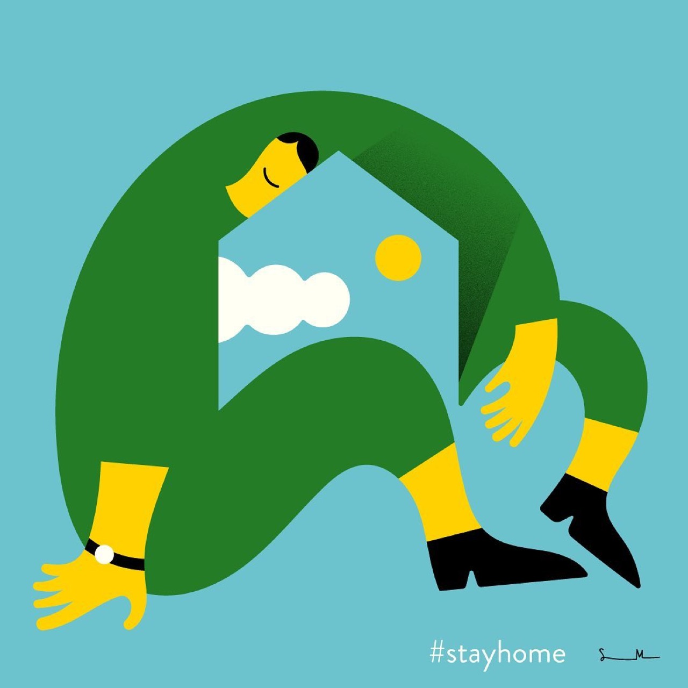

Kinetic art introduces actual movement and temporal dimensions into visual art experience, transforming static object relationships into dynamic processes where form, space, and meaning evolve through time. Contemporary kinetic artists employ motors, wind, gravity, or viewer interaction to generate movement that fundamentally alters how viewers experience artworks. Kinetic sculpture engages with physics, engineering, and mechanical principles while maintaining artistic sophistication and conceptual depth. The medium permits artists to explore themes of transformation, temporal process, and the relationship between stillness and movement, creating art objects that remain perpetually engaged with change and development.
Stefano Marra’s Graphic Illustrations Deserve More Love

Previous articleHsinping Pan is All About Having Fun